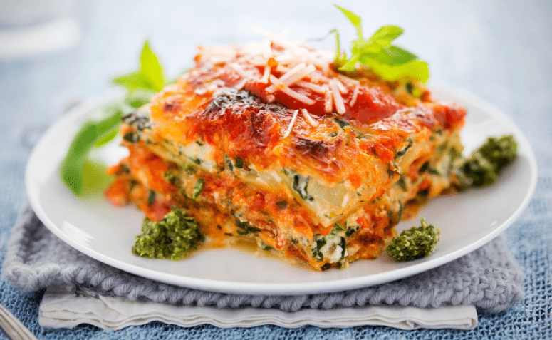

Lasanha à Bolonhesa
- 400g de mussarela
- 400g de presunto
- 1 pacote de macarrão de lasanha
- 800g de carne moída
- 1 sachê de molho de tomate
- 1 cx de creme de leite
- Oregano a gosto
- Cozinhe a carne moída
- Adicione o sachê de molho de tomate a carne
- Despeje uma porção da carne em uma tijela
- Adicione uma camada de presunto e de queijo e de macarrão
- Repita o processo até a cabar os ingredientes
- Leve ao forno por 25 min a 180º